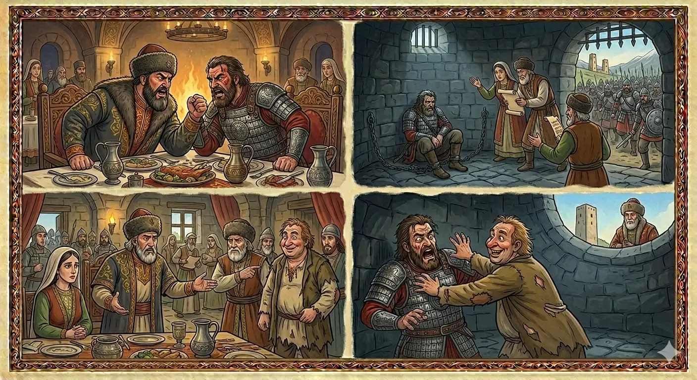

И.А. Дахкильгов. Хьехаме дувцарш - поучительные рассказы-притчи.
И.А. Дахкильгов. Хьехаме дувцарш - поучительные рассказы-притчи. Из ингушского фольклора.

ТӀем тӀе венна дӀавала кийча ва со
Цхьан паччахьалкхе чӀогӀа говза волаш бӀуна баьчча хиннав. Изи паччахьи цкъа дуаш - молаш багӀаш, вӀаший къовсабеннаб. ГӀулакх довнага даьннад. ЭгӀазвахана паччахьа амар а даь, из бӀуна баьчча кӀоаргача кӀоага чу веллав. Цу чу даа - мала Ӏочудойташ хиннад цунна. Дукха ха яьлале лоалахарча паччахьа тӀом хьоабаьб. ХӀаьта укх паччахьа саг хиннавац цу бӀуна баьччал леладе. Фу ду ца ховш висав из. Эздеша дагавехийтав цунна кӀоаг чу воалла бӀина баьчча. ГӀадвахав паччахь, жи, оалаш, хьавоалаве из аьннад. КӀоага дӀатӀа а баха, паччахьас хьавола йоах хьога, аьлча, аьннад бӀуна баьччас. - Сай даьна санна паччахьа мутӀахьа хиннавар со, хӀаьта цо сона ер тийшаболх бир. Фухха дарах со хьалъараваргац, ала цунга. Юха а нах тӀабахийтаб, ах паччахьалкхеи паччахьа йоӀи лургда ше аьннад паччахьа. ХӀама хиннадац. МоастагӀий тӀатеӀаш хиннаб. Юха а ший гӀозарца дагаваьнав паччахь. Хьаькъал долаш волча цхьан эздечо хьийхад цунна бӀуна баьчча волча кӀоага чу цхьа Ӏовдала саг Ӏочувахийта, аьнна. Ӏочувахийтав. Ши ди далалехьа кӀоаг чура бӀуна баьччас мухь балийтаб: - Далла лораволва со укх балех! Ах паччахьалкхе а езац сона, паччахьа йоӀ а езац, бӀуна хьалха этта, котало а йоаккхаргъя. Оаш мел яхар де кийча ва со, оаш со укх къоаг чура хьалъаравоаккхе, укх Ӏовдалах со кӀалхаравоаккхе! Укхунца цхьана ца хила тӀем тӀа венна дӀавала кийча ва со!
РУССКИЙ
Готов умереть в бою
У некоего царя был знаменитый полководец. Как-то пировали они вдвоем и по пьянке заспорили крепко, чуть не до драки. Царь велел бросить полководца в глубокую яму. Бросили. Туда же опускали ему еду, питье. Вскоре соседний царь начал войну против этого царства. А у того царя не было никого, кто мог бы возглавить войско. Растерялся царь. Приближенные напомнили ему про сидящего в яме полководца. Обрадовался царь и послал за ним. Подошли к яме и передали слова царя. Полководец ответил: "Я чтил царя как отца родного, а он меня предал. Ни за что не выйду отсюда". Царь вновь послал людей к полководцу и через приближенных обещал ему дать полцарства и свою дочь замуж. И это обещание не помогло. А враг тем временем все наступал. Царь вновь собрал совет. Некий мудрый приближенный посоветовал царю опустить в яму к тому полководцу какого-нибудь дурака. Нашли такого и опустили в яму. Не прошло и двух дней, как из ямы стали раздаваться призывные крики полководца: "Не надо мне полцарства, не надо мне царевны, готов возглавить войско и победить врага. Готов исполнить любой приказ, только выньте меня из ямы, только избавьте от этого дурака. Я готов погибнуть в бою, только бы не сидеть с ним".
ENGLISH
I am ready to die in battle
A certain king had a famous general. One day, the two of them were feasting together. In their drunken state, they got into a heated argument that nearly turned into a fight. The king ordered the general to be thrown into a deep pit. So they did. Food and drink were lowered down to him. Soon, a neighbouring king declared war on this kingdom. However, that king had no one to lead his army. The king was at a loss. His courtiers reminded him of the general who was imprisoned in a pit. Delighted, the king sent for him. They approached the pit and conveyed the king's message to the general. The general replied: "I honoured the king as my own father, yet he betrayed me. I shall never leave this place." The king sent men to the commander once more, promising him half the kingdom and his daughter's hand in marriage through his courtiers. But this promise did not help. Meanwhile, the enemy continued to advance. The king convened his council once more. One wise courtier advised the king to lower a fool into the pit to speak to the general. They found such a man and lowered him into the pit. Less than two days later, the general's cries began to ring out from the pit. "I don't want half the kingdom or the princess. I am ready to lead the army and defeat the enemy. I will carry out any order; just get me out of this pit and rid me of this fool. I am ready to die in battle, just so long as I don't have to sit here with him."
НОХЧИЙН
ТӀамехь велла дӀавала кийча ву со
Цхьана пачхьалкхехь чӀогӀа говза волуш бӀонбаьчча хилла. Изий паччахьий цкъа дууш - молуш бохкуш, вовшех къовсабелла. ГӀуллакх девне даьлла. ОьгӀазвахан паччахьо омра а дина, иза бӀонбаьчча кӀоргачу кӀоган чу воьллина. Цу чу даа - мала чудоуьйтуш хилла цунна. Дукха хан йалале лулара паччахьо тӀом схьабина. ХӀета кху паччахьан стаг хилла вац бӀонбаьччалла леладан. ХӀун дан ца хууш висна иза. Оьздеша дагаваийтина цунна кӀаг чу воллу бӀонбаьчча. ГӀадвахна паччахь, же, олуш, схьавалаве иза аьлла. КӀогана дӀатӀе а бахна, паччахьо схьавола бах хьога, аьлча, аьлла бӀонбаьччано. - Сайн дена санна паччахьан муьтӀахь хилла вар со, хӀетте а цо суна хӀара тешнабехк бир. ХӀуъа а дарх со хьалъаравер вац, ала цуьнга. Йуха а нах тӀебахийтина, ах пачхьалкхий паччахьан йоӀий лур ду ша аьлла паччахьо. ХӀума хилла дац. МостагӀий тӀетеӀаш хилла. Йуха а шен гуонца дагаваьлла паччахь. Хьекъал долуш волчу цхьан оьздечо хьехна цунна бӀонбаьчча волчу кӀоган чу цхьа Ӏовдал стаг дӀачувахийта, аьлла. ДӀачувахийтина. Ши де далале кӀаг чура бӀонбаьччас мохь балийтина: - Далла ларвойла со кху балех! Ах пачхьалкх а йезац суна, паччахьан йоӀ а йезац, бӀона хьалха хӀоьттина, толам а боккхур бу. Аш мел бохург дан кийча ву со, аш со кху къаг чура хьалъараваккхахь, кху Ӏовдалах со кӀелхьараваккхахь! Кхуьнца цхьана ца хила тӀеман тӀехь велла дӀавала кийча ву со!
ПОГОВОРКИ
Аьттув боацчара юха а ваьле, хьай аьттув лаха. Отступись от того, чего не одолеешь (не победишь), и начни искать свою удачу. Give up on what you cannot overcome, and go look for your own fortune. Аьтто боцучура йуха а вале, хьайн аьтто лаха.Дар дайначо яьхад: “Ширткъа дӀа а хийце, мелӀа ловзае вай”. Бездельник говорил: “Давайте отпустим ласку (мышевидный зверек) и начнем играть с ящерицей”. The idler said: "Let's release the weasel and go play with the lizard instead." Дан хӀума доцучо баьхна: "Шаткъа дӀа а хеце, моьлкъа ловзабе вай».ДегӀ - пилалла, хьаькъал - хьазалгалла. Телом – слон, умом – пташка. In body, an elephant; in mind, a little bird. ДегӀ - пилалла, хьекъал - хьозаналла.Дикача гӀулакхо лаьх аьла ваьа, воча оамало аьлах лай ваьв. Добрый поступок раба князем делает; дурной характер князя рабом делает. A good deed can make a slave a prince; a bad temper can make a prince a slave. Дикачу гӀиллакхо лайх эла во, вочу амало элах лай во.Дуне довзаш лийначо цӀагӀа ваьгӀар Ӏехаваьв. Много странствовавший всегда перехитрит домоседа. The well-travelled man will always outwit the one who stayed home. Дуьне довзуш леллачо цӀахь ваьхнарг Ӏехавина.ДӀадаьннар кердадаьккха дувцарах бала совбалар мара хӀама дац. Ворошить прошлое – вновь горе мыкать. Digging up the past brings nothing but fresh grief. ДӀадаьлларг керладаьккхина дийцарх бала совбалар бен хӀума бац.Къахьадар ца кхаьллача, мерзачун чам хайнабац. Не познав вкуса горького, не узнаешь вкуса сладкого. Without tasting bitterness, you cannot know the taste of sweetness. Къахьадерг ца кхаьллича, мерзачун чам хиъна бац.Наха саг магӀа а воаккх, наха из эгӀа а воаккх. Люди могут человека и во главу стола посадить, а могут и в конец стола пересадить. People can seat a man at the head of the table, and people can move him to the far end. Наха стаг баьчче а воккху, наха иза охьа а воккху.ТӀема майралца котваьнна паччахьа вац, тӀема говзалца мара. В войне цари побеждают не мужеством, а умением (военной хитростью). In war, kings win not through courage but through cunning strategy. ТӀамехь майралца тоьлла паччахь вац, тӀеман говзаллица бен.ТӀехьаотта адам ца хилча, паччахьах а паччахь хиннавац. И падишах (царь…) не стал падишахом, если за ним народ не стоял. Even a padishah does not become a padishah unless the people stand behind him. ТӀаьхьахӀотта адам ца хилча, паччахьах а паччахь хила вац.Цаца чу хий кхахьа аттагӀа да Ӏовдала саг кхетавечул. Легче воду носить в сите, чем вразумлять дурака. It's easier to carry water in a sieve than to reason with a fool. Цацан чохь хи кхехьа аттах ду, Ӏовдал стаг кхетавечул.Ӏовдала саг хьалеваьчоа хаза ца дезар хозаргда. Разоткровенничаешься с дураком, - услышишь то, чего услышать не желал бы. Open up to a fool, and you'll hear what you never wanted to hear. Ӏовдал стаг схьалевинчун хаза ца дезарг хезар ду.